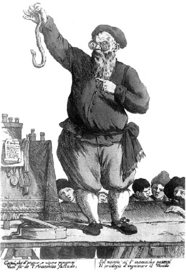

ŞEKİL 28. Sattığı tiryakın ne denli etkili olduğunu bir yılanla kanıtlamaya çalışan tiryak satıcısı [Giuseppe Maria Mitelli’nin (1634-1718) bir çizimi].3, 55
Ortaçağ İslâm dünyasında yeni bir formüle göre hazırlanan tiryakın etkinliğinin sınanması için bir yaban horozu avlanır, üzerine bir yılan salınarak zehirlenmesine çalışılır, sonra da denenecek tiryak bu hayvana içirilirdi. Eğer horoz yaşarsa, tiryakın etkili olduğuna hükmedilirdi.56
Avrupa’da bayılanlar, en keskininden karanfil yağı ya da kâfur ruhlu nışadırla ayıltılıyordu. Buğday unu, badem kepeği ve dövülmüş menekşe kökünden pudra; odun kömürü, güherçile, sandal ağacı talaşının yoğrulmasıyla ise kokulu mum hazırlanıyordu.47
Sarmısak (“Allium sativum“, İng. “garlic”), “theriaca pauperum” (“yoksulların tiryakı”) diye nitelenmekte ve yoksul insanların tüm dertlerinin çaresi olarak kabul edilmekteydi (ŞEKİL 29). Sarmısağın manevî değerine inanıldığı için nazarlık olarak da kullanılmaktadır. Bunun nedeni, taşıdığı kokusundan dolayıdır. Halk arasında, sarmısağın kokusunun, hastalıklara neden olan kötü ruhları uzaklaştırıcı olduğuna inanılır. Eğer bir eve nazar değmemesi istenirse, evin içine, kapı üstlerine sarmısak asılır. Adam Lonitzer’in (Lonicerus) (1528-1586) Kreuterbüch, New Zügericht... (Gözden Geçirilmiş Bitkiler Kitabı...) (Frankfurt a. M, 1557) adlı eserinde sarmısak, ilaç olarak önerilmiştir. Sarmısak özsuyu, başa sürülecek olursa bitleri öldürür, içsel kullanıldığında ise zehirlere ve kurtçuklara karşı etkili olurdu. Sarmısağın bulaşıcı hastalıklara karşı etkili bir ilaç olduğu da düşünülmekteydi. İsviçre’nin Basel kentinde veba salgınları döneminde, düzenli olarak sarmısak yiyen Yahudilerin, bu hastalığa diğer insanlardan daha az yakalandıkları ve ölüm oranının çok düşük olduğu söylenmekteydi. Polonya’da Yahudiler, şeytandan korumak üzere hasta çocukların boyunlarına sarmısak takarlardı. Sirke eskiden nefes açıcı olarak, deri hastalıklarında, ateş düşürme ve susuzluğu giderme gibi amaçlarla kullanılırdı. Halk arasında sirkeli ve şaraplı sarmısak terkipleri kullanılır ve Fransa’da “vinaigre des quatres voleurs” (“dört hırsız sirkesi”) adıyla bilinirdi.49, 57